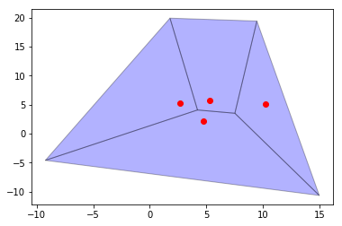
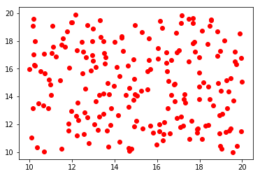
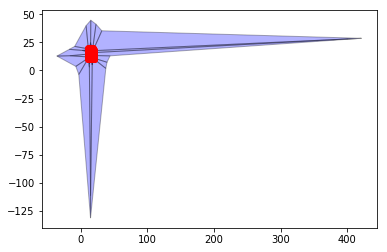
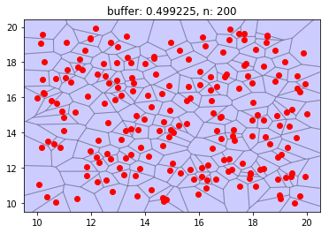

This page was generated from user-guide/weights/voronoi.ipynb.
Interactive online version:

Voronoi Polygons for 2-D Point Sets¶
Author: Serge Rey (http://github.com/sjsrey)
Basic Usage¶
[24]:
import os
import sys
sys.path.append(os.path.abspath(".."))
[25]:
from libpysal.cg.voronoi import voronoi, voronoi_frames
[26]:
points = [(10.2, 5.1), (4.7, 2.2), (5.3, 5.7), (2.7, 5.3)]
[27]:
regions, vertices = voronoi(points)
[28]:
regions
[28]:
[[1, 3, 2], [4, 5, 1, 0], [0, 1, 7, 6], [9, 0, 8]]
[29]:
vertices
[29]:
array([[ 4.21783296, 4.08408578],
[ 7.51956025, 3.51807539],
[ 9.4642193 , 19.3994576 ],
[ 14.98210684, -10.63503022],
[ -9.22691341, -4.58994414],
[ 14.98210684, -10.63503022],
[ 1.78491801, 19.89803294],
[ 9.4642193 , 19.3994576 ],
[ 1.78491801, 19.89803294],
[ -9.22691341, -4.58994414]])
[30]:
region_df, point_df = voronoi_frames(points)
[31]:
%matplotlib inline
import matplotlib.pyplot as plt
import numpy as np
[32]:
fig, ax = plt.subplots()
region_df.plot(ax=ax, color="blue", edgecolor="black", alpha=0.3)
point_df.plot(ax=ax, color="red")
[32]:
<matplotlib.axes._subplots.AxesSubplot at 0x7f85e38b94a8>

Larger Problem¶
[33]:
n_points = 200
np.random.seed(12345)
points = np.random.random((n_points, 2)) * 10 + 10
results = voronoi(points)
mins = points.min(axis=0)
maxs = points.max(axis=0)
[34]:
regions, vertices = voronoi(points)
[35]:
regions_df, points_df = voronoi_frames(points)
[36]:
fig, ax = plt.subplots()
points_df.plot(ax=ax, color="red")
[36]:
<matplotlib.axes._subplots.AxesSubplot at 0x7f85e39dae10>

[37]:
fig, ax = plt.subplots()
regions_df.plot(ax=ax, color="blue", edgecolor="black", alpha=0.3)
points_df.plot(ax=ax, color="red")
[37]:
<matplotlib.axes._subplots.AxesSubplot at 0x7f85e1fbd240>

Trimming¶
[38]:
points = np.array(points)
maxs = points.max(axis=0)
mins = points.min(axis=0)
xr = maxs[0] - mins[0]
yr = maxs[1] - mins[1]
buff = 0.05
r = max(yr, xr) * buff
minx = mins[0] - r
miny = mins[1] - r
maxx = maxs[0] + r
maxy = maxs[1] + r
[39]:
fig, ax = plt.subplots()
regions_df.plot(ax=ax, edgecolor="black", facecolor="blue", alpha=0.2)
points_df.plot(ax=ax, color="red")
plt.xlim(minx, maxx)
plt.ylim(miny, maxy)
plt.title(f"buffer: {r}, n: {n_points}")
plt.show()

Voronoi Weights¶
[40]:
from libpysal.weights.contiguity import Voronoi as Vornoi_weights
[41]:
w = Vornoi_weights(points)
[42]:
w.n
[42]:
200
[43]:
w.pct_nonzero
[43]:
2.915
[44]:
w.histogram
[44]:
[(3, 3),
(4, 28),
(5, 52),
(6, 65),
(7, 34),
(8, 10),
(9, 5),
(10, 2),
(11, 0),
(12, 1)]
[45]:
idx = [i for i in range(w.n) if w.cardinalities[i] == 12]
[46]:
points[idx]
[46]:
array([[16.50851787, 13.12932895]])
[ ]: